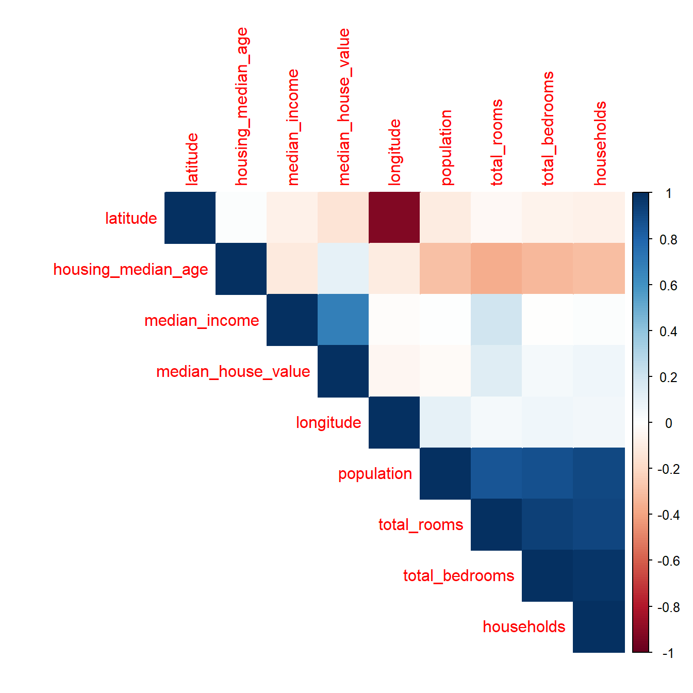
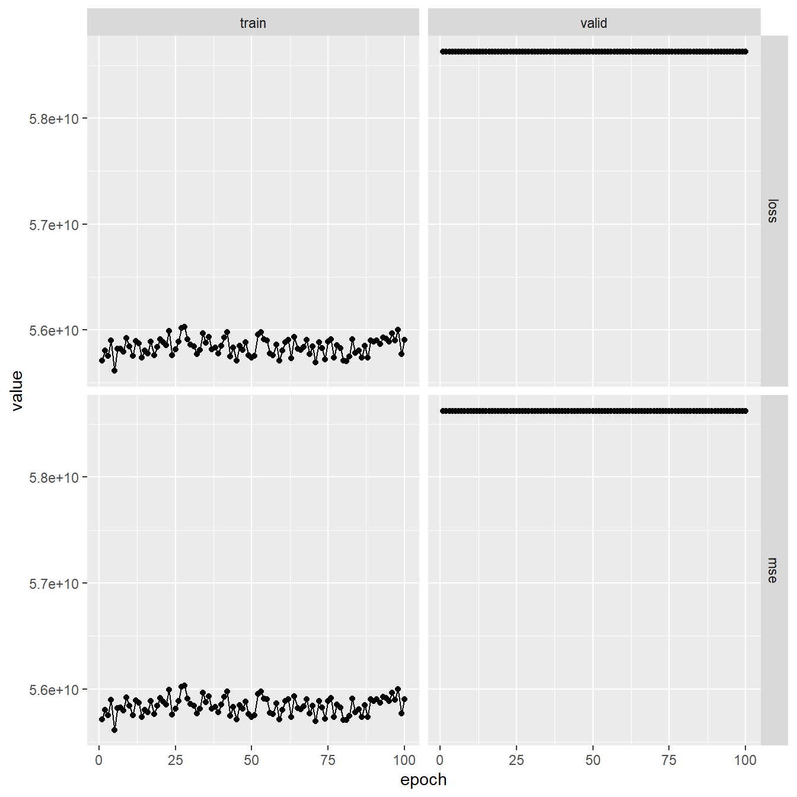
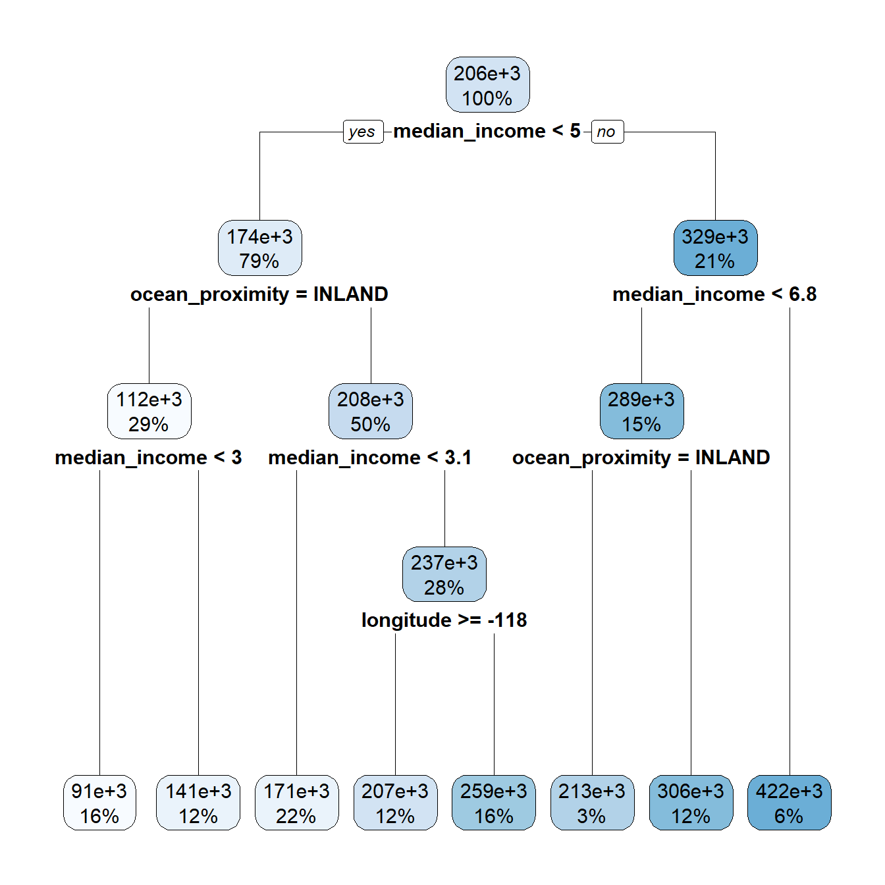
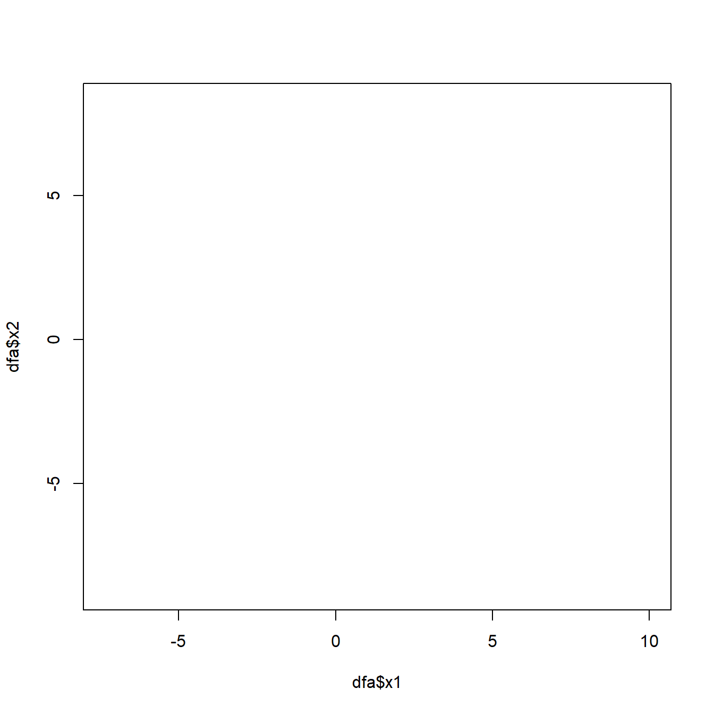
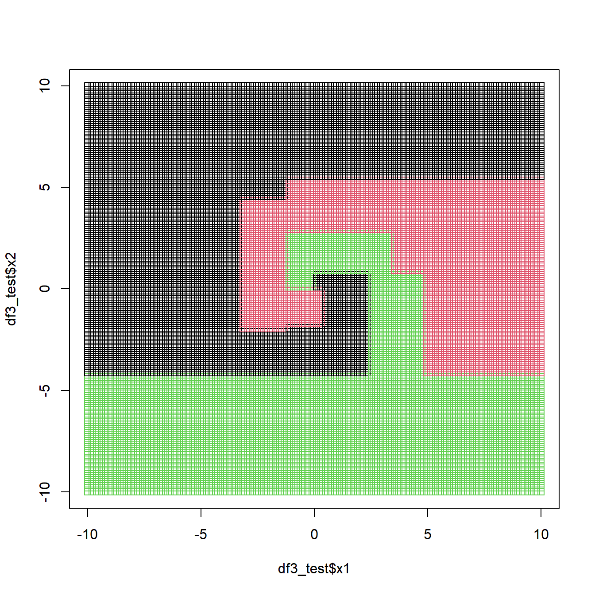
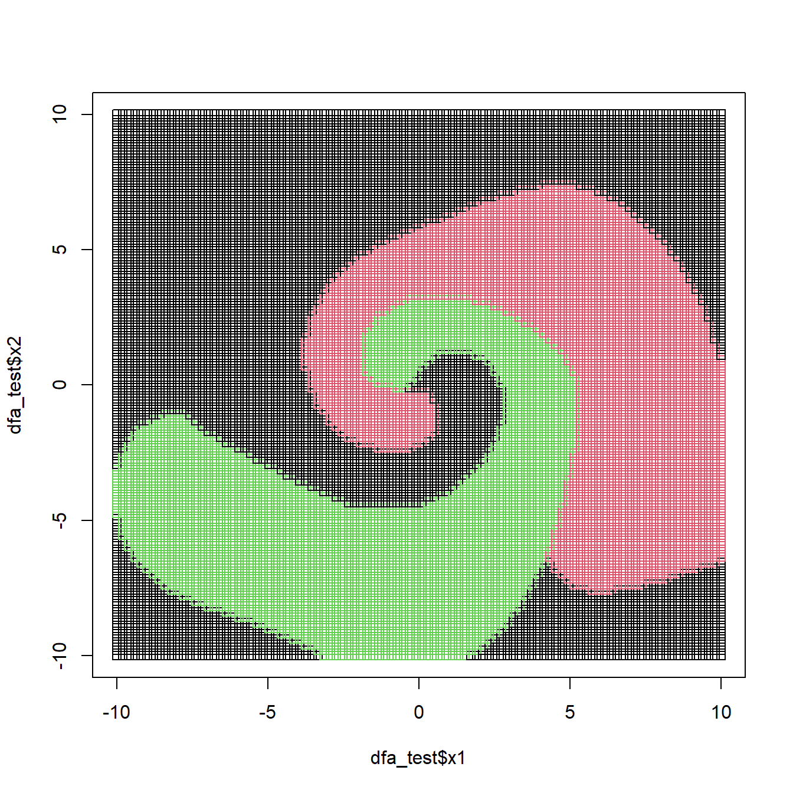
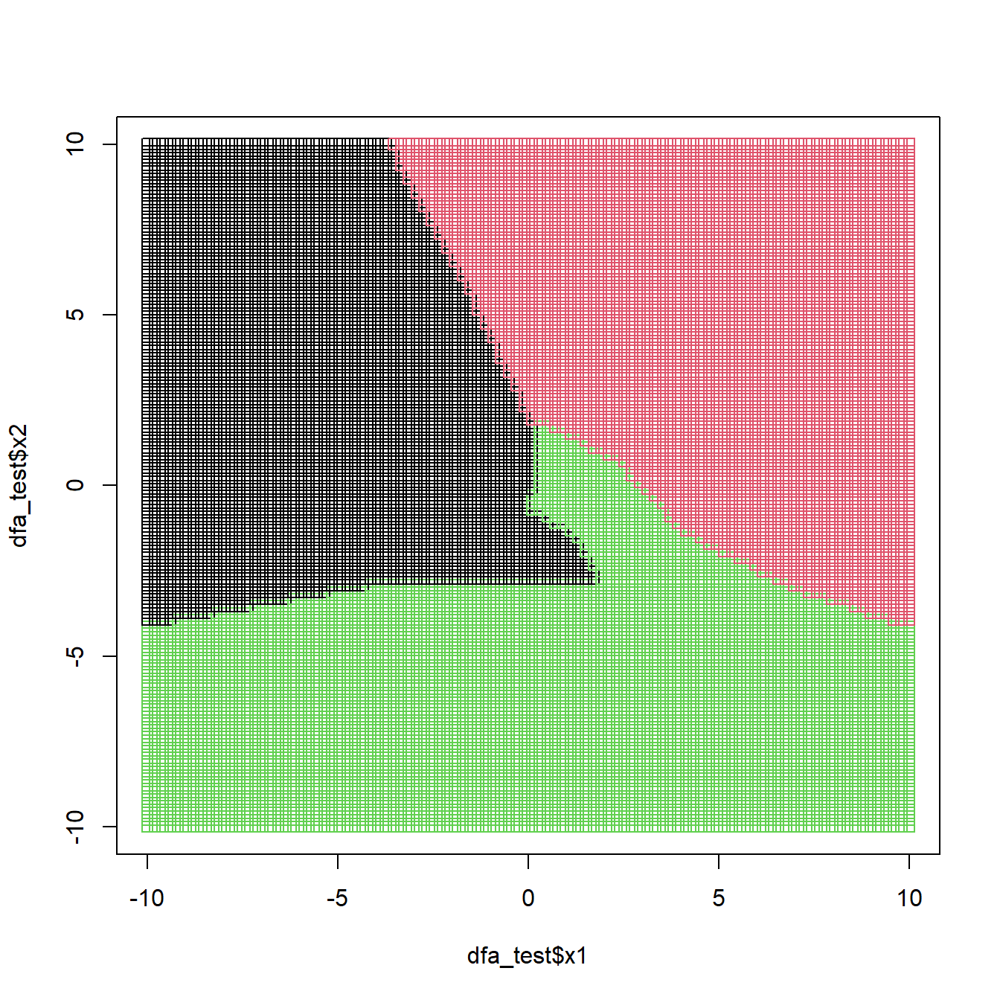

library(dplyr)
library(readr)
library(tidyr)
library(purrr)
library(broom)
library(magrittr)
library(corrplot)
library(caret)
library(rpart)
library(rpart.plot)
library(e1071)
library(torch)
library(luz)
Due: Wed, Apr 19, 2023 @ 11:59pm
Please read the instructions carefully before submitting your assignment.
- This assignment requires you to only upload a
PDFfile on Canvas - Don’t collapse any code cells before submitting.
- Remember to make sure all your code output is rendered properly before uploading your submission.
⚠️ Please add your name to the author information in the frontmatter before submitting your assignment ⚠️
In this assignment, we will explore decision trees, support vector machines and neural networks for classification and regression. The assignment is designed to test your ability to fit and analyze these models with different configurations and compare their performance.
We will need the following packages:
Question 1
60 points
Prediction of Median House prices
1.1 (2.5 points)
The data folder contains the housing.csv dataset which contains housing prices in California from the 1990 California census. The objective is to predict the median house price for California districts based on various features.
Read the data file as a tibble in R. Preprocess the data such that:
- the variables are of the right data type, e.g., categorical variables are encoded as factors
- all column names to lower case for consistency
- Any observations with missing values are dropped
path <- "data/housing.csv"
df <- read_csv(path) %>%
mutate_if(is.character, as.factor) %>%
rename_all(tolower) %>%
na.omit()Rows: 20640 Columns: 10
── Column specification ────────────────────────────────────────────────────────
Delimiter: ","
chr (1): ocean_proximity
dbl (9): longitude, latitude, housing_median_age, total_rooms, total_bedroom...
ℹ Use `spec()` to retrieve the full column specification for this data.
ℹ Specify the column types or set `show_col_types = FALSE` to quiet this message.df %>% head# A tibble: 6 × 10
longitude latitude housing_median_age total_rooms total_bedrooms population
<dbl> <dbl> <dbl> <dbl> <dbl> <dbl>
1 -122. 37.9 41 880 129 322
2 -122. 37.9 21 7099 1106 2401
3 -122. 37.8 52 1467 190 496
4 -122. 37.8 52 1274 235 558
5 -122. 37.8 52 1627 280 565
6 -122. 37.8 52 919 213 413
# ℹ 4 more variables: households <dbl>, median_income <dbl>,
# median_house_value <dbl>, ocean_proximity <fct>1.2 (2.5 points)
Visualize the correlation matrix of all numeric columns in df using corrplot()
df %>%
select_if(is.numeric) %>%
cor() %>%
corrplot(type = "upper", method = "color", order = "hclust")
1.3 (5 points)
Split the data df into df_train and df_split using test_ind in the code below:
set.seed(42)
test_ind <- sample(
1:nrow(df),
floor( nrow(df)/10 ),
replace=FALSE
)
df_train <- df[-test_ind, ]
df_test <- df[test_ind, ]1.4 (5 points)
Fit a linear regression model to predict the median_house_value :
latitudelongitudehousing_median_agetotal_roomstotal_bedroomspopulationmedian_incomeocean_proximity
Interpret the coefficients and summarize your results.
lm_fit <- lm(median_house_value ~ . -households, data = df_train)
summary(lm_fit)
Call:
lm(formula = median_house_value ~ . - households, data = df_train)
Residuals:
Min 1Q Median 3Q Max
-559024 -42322 -10389 28743 710215
Coefficients:
Estimate Std. Error t value Pr(>|t|)
(Intercept) -2.273e+06 9.138e+04 -24.873 < 2e-16 ***
longitude -2.681e+04 1.060e+03 -25.305 < 2e-16 ***
latitude -2.539e+04 1.047e+03 -24.244 < 2e-16 ***
housing_median_age 1.074e+03 4.616e+01 23.261 < 2e-16 ***
total_rooms -6.159e+00 8.431e-01 -7.306 2.87e-13 ***
total_bedrooms 1.353e+02 4.254e+00 31.804 < 2e-16 ***
population -3.413e+01 9.838e-01 -34.694 < 2e-16 ***
median_income 3.936e+04 3.573e+02 110.154 < 2e-16 ***
ocean_proximityINLAND -4.018e+04 1.836e+03 -21.891 < 2e-16 ***
ocean_proximityISLAND 1.324e+05 3.442e+04 3.847 0.00012 ***
ocean_proximityNEAR BAY -2.522e+03 2.022e+03 -1.247 0.21226
ocean_proximityNEAR OCEAN 4.349e+03 1.658e+03 2.622 0.00875 **
---
Signif. codes: 0 '***' 0.001 '**' 0.01 '*' 0.05 '.' 0.1 ' ' 1
Residual standard error: 68780 on 18378 degrees of freedom
Multiple R-squared: 0.643, Adjusted R-squared: 0.6428
F-statistic: 3009 on 11 and 18378 DF, p-value: < 2.2e-161.5 (5 points)
Complete the rmse function for computing the Root Mean-Squared Error between the true y and the predicted yhat, and use it to compute the RMSE for the regression model on df_test
rmse <- function(y, yhat) {
sqrt(mean((y - yhat)^2))
}
lm_predictions <- predict(lm_fit, newdata = df_test)
lm_RMSE <- rmse(df_test$median_house_value, lm_predictions)
lm_RMSE[1] 68339.821.6 (5 points)
Fit a decision tree model to predict the median_house_value using the same predictors as in 1.4. Use the rpart() function.
rpart_fit <- rpart(median_house_value ~ . -households, data = df_train)
rpart_predictions <- predict(rpart_fit, newdata = df_test)Visualize the decision tree using the rpart.plot() function.
rpart.plot(rpart_fit)
Report the root mean squared error on the test set.
rpart_RMSE <- rmse(df_test$median_house_value, rpart_predictions)
rpart_RMSE[1] 75876.871.7 (5 points)
Fit a support vector machine model to predict the median_house_value using the same predictors as in 1.4. Use the svm() function and use any kernel of your choice. Report the root mean squared error on the test set.
svm_fit <- svm(median_house_value ~ . -households, data = df_train, kernel = "radial")
svm_predictions <- predict(svm_fit, newdata = df_test)
svm_RMSE <- rmse(df_test$median_house_value, svm_predictions)
svm_RMSE[1] 56678.841.8 (25 points)
Initialize a neural network model architecture:
NNet <- nn_module(
initialize = function(p, q1, q2, q3){
self$hidden1 <- nn_linear(p, q1)
self$hidden2 <- nn_linear(q1, q2)
self$hidden3 <- nn_linear(q2, q3)
self$output <- nn_linear(q3, 1)
self$activation <- nn_relu()
self$sigmoid <- nn_sigmoid()
},
forward = function(x){
x %>%
self$hidden1() %>% self$activation() %>%
self$hidden2() %>% self$activation() %>%
self$hidden3() %>% self$activation() %>%
self$output() %>% self$sigmoid()
}
)Fit a neural network model to predict the median_house_value using the same predictors as in 1.4. Use the model.matrix function to create the covariate matrix and luz package for fitting the network with \(32, 16, 8\) nodes in each of the three hidden layers.
M <- model.matrix(median_house_value ~ 0 + . -households, data = df_train)
nnet_fit <- NNet %>%
setup(
loss = nn_mse_loss(),
optimizer = optim_adam,
metrics = list(
luz_metric_mse()
)
) %>%
set_hparams(
p = ncol(M), q1 = 32, q2 = 16, q3 = 8
) %>%
set_opt_hparams(
lr = 0.001
) %>%
fit(
data = list(
model.matrix(median_house_value ~ 0 + . -households, data = df_train),
df_train %>% select(median_house_value) %>% as.matrix
),
valid_data = list(
model.matrix(median_house_value ~ 0 + . -households, data = df_test),
df_test %>% select(median_house_value) %>% as.matrix
),
epochs = 100,
dataloader_options = list(batch_size = 512, shuffle = TRUE),
verbose = TRUE # Change to TRUE while tuning. But, set to FALSE before submitting
)Epoch 1/100
Train metrics: Loss: 55710674944 - MSE: 55710685944.6857
Valid metrics: Loss: 58627112960 - MSE: 58621281306.5649
Epoch 2/100
Train metrics: Loss: 55804469248 - MSE: 55804483408.4571
Valid metrics: Loss: 58627112960 - MSE: 58621281306.5649
Epoch 3/100
Train metrics: Loss: 55751872512 - MSE: 55751872629.0286
Valid metrics: Loss: 58627112960 - MSE: 58621281306.5649
Epoch 4/100
Train metrics: Loss: 55896702976 - MSE: 55896712806.4
Valid metrics: Loss: 58627112960 - MSE: 58621281306.5649
Epoch 5/100
Train metrics: Loss: 55614537728 - MSE: 55614539249.3714
Valid metrics: Loss: 58627112960 - MSE: 58621281306.5649
Epoch 6/100
Train metrics: Loss: 55818289152 - MSE: 55818279906.7429
Valid metrics: Loss: 58627112960 - MSE: 58621281306.5649
Epoch 7/100
Train metrics: Loss: 55823306752 - MSE: 55823306634.9714
Valid metrics: Loss: 58627112960 - MSE: 58621281306.5649
Epoch 8/100
Train metrics: Loss: 55795343360 - MSE: 55795362435.6571
Valid metrics: Loss: 58627112960 - MSE: 58621281306.5649
Epoch 9/100
Train metrics: Loss: 55920631808 - MSE: 55920638010.5143
Valid metrics: Loss: 58627112960 - MSE: 58621281306.5649
Epoch 10/100
Train metrics: Loss: 55841886208 - MSE: 55841895336.2286
Valid metrics: Loss: 58627112960 - MSE: 58621281306.5649
Epoch 11/100
Train metrics: Loss: 55750922240 - MSE: 55750923410.2857
Valid metrics: Loss: 58627112960 - MSE: 58621281306.5649
Epoch 12/100
Train metrics: Loss: 55893913600 - MSE: 55893917110.8571
Valid metrics: Loss: 58627112960 - MSE: 58621281306.5649
Epoch 13/100
Train metrics: Loss: 55870095360 - MSE: 55870099104.9143
Valid metrics: Loss: 58627112960 - MSE: 58621281306.5649
Epoch 14/100
Train metrics: Loss: 55736614912 - MSE: 55736617837.7143
Valid metrics: Loss: 58627112960 - MSE: 58621281306.5649
Epoch 15/100
Train metrics: Loss: 55801356288 - MSE: 55801359330.7429
Valid metrics: Loss: 58627112960 - MSE: 58621281306.5649
Epoch 16/100
Train metrics: Loss: 55777357824 - MSE: 55777360515.6571
Valid metrics: Loss: 58627112960 - MSE: 58621281306.5649
Epoch 17/100
Train metrics: Loss: 55888764928 - MSE: 55888767619.6571
Valid metrics: Loss: 58627112960 - MSE: 58621281306.5649
Epoch 18/100
Train metrics: Loss: 55761063936 - MSE: 55761077394.2857
Valid metrics: Loss: 58627112960 - MSE: 58621281306.5649
Epoch 19/100
Train metrics: Loss: 55840120832 - MSE: 55840120246.8571
Valid metrics: Loss: 58627112960 - MSE: 58621281306.5649
Epoch 20/100
Train metrics: Loss: 55913103360 - MSE: 55913108041.1429
Valid metrics: Loss: 58627112960 - MSE: 58621281306.5649
Epoch 21/100
Train metrics: Loss: 55883128832 - MSE: 55883141705.1429
Valid metrics: Loss: 58627112960 - MSE: 58621281306.5649
Epoch 22/100
Train metrics: Loss: 55852412928 - MSE: 55852408714.9714
Valid metrics: Loss: 58627112960 - MSE: 58621281306.5649
Epoch 23/100
Train metrics: Loss: 55991332864 - MSE: 55991342928.4571
Valid metrics: Loss: 58627112960 - MSE: 58621281306.5649
Epoch 24/100
Train metrics: Loss: 55759151104 - MSE: 55759163743.0857
Valid metrics: Loss: 58627112960 - MSE: 58621281306.5649
Epoch 25/100
Train metrics: Loss: 55816134656 - MSE: 55816135943.3143
Valid metrics: Loss: 58627112960 - MSE: 58621281306.5649
Epoch 26/100
Train metrics: Loss: 55888588800 - MSE: 55888598162.2857
Valid metrics: Loss: 58627112960 - MSE: 58621281306.5649
Epoch 27/100
Train metrics: Loss: 56019644416 - MSE: 56019652139.8857
Valid metrics: Loss: 58627112960 - MSE: 58621281306.5649
Epoch 28/100
Train metrics: Loss: 56030076928 - MSE: 56030078098.2857
Valid metrics: Loss: 58627112960 - MSE: 58621281306.5649
Epoch 29/100
Train metrics: Loss: 55908712448 - MSE: 55908712448
Valid metrics: Loss: 58627112960 - MSE: 58621281306.5649
Epoch 30/100
Train metrics: Loss: 55859568640 - MSE: 55859566416.4571
Valid metrics: Loss: 58627112960 - MSE: 58621281306.5649
Epoch 31/100
Train metrics: Loss: 55841452032 - MSE: 55841455191.7714
Valid metrics: Loss: 58627112960 - MSE: 58621281306.5649
Epoch 32/100
Train metrics: Loss: 55770931200 - MSE: 55770943722.0571
Valid metrics: Loss: 58627112960 - MSE: 58621281306.5649
Epoch 33/100
Train metrics: Loss: 55812276224 - MSE: 55812284533.0286
Valid metrics: Loss: 58627112960 - MSE: 58621281306.5649
Epoch 34/100
Train metrics: Loss: 55966937088 - MSE: 55966945631.0857
Valid metrics: Loss: 58627112960 - MSE: 58621281306.5649
Epoch 35/100
Train metrics: Loss: 55876907008 - MSE: 55876910167.7714
Valid metrics: Loss: 58627112960 - MSE: 58621281306.5649
Epoch 36/100
Train metrics: Loss: 55933194240 - MSE: 55933201846.8571
Valid metrics: Loss: 58627112960 - MSE: 58621281306.5649
Epoch 37/100
Train metrics: Loss: 55813697536 - MSE: 55813692971.8857
Valid metrics: Loss: 58627112960 - MSE: 58621281306.5649
Epoch 38/100
Train metrics: Loss: 55829528576 - MSE: 55829526586.5143
Valid metrics: Loss: 58627112960 - MSE: 58621281306.5649
Epoch 39/100
Train metrics: Loss: 55777447936 - MSE: 55777459989.9429
Valid metrics: Loss: 58627112960 - MSE: 58621281306.5649
Epoch 40/100
Train metrics: Loss: 55851347968 - MSE: 55851347733.9429
Valid metrics: Loss: 58627112960 - MSE: 58621281306.5649
Epoch 41/100
Train metrics: Loss: 55927681024 - MSE: 55927684066.7429
Valid metrics: Loss: 58627112960 - MSE: 58621281306.5649
Epoch 42/100
Train metrics: Loss: 55976738816 - MSE: 55976741039.5429
Valid metrics: Loss: 58627112960 - MSE: 58621281306.5649
Epoch 43/100
Train metrics: Loss: 55747936256 - MSE: 55747941054.1714
Valid metrics: Loss: 58627112960 - MSE: 58621281306.5649
Epoch 44/100
Train metrics: Loss: 55831216128 - MSE: 55831225256.2286
Valid metrics: Loss: 58627112960 - MSE: 58621281306.5649
Epoch 45/100
Train metrics: Loss: 55710662656 - MSE: 55710658911.0857
Valid metrics: Loss: 58627112960 - MSE: 58621281306.5649
Epoch 46/100
Train metrics: Loss: 55848083456 - MSE: 55848093520.4571
Valid metrics: Loss: 58627112960 - MSE: 58621281306.5649
Epoch 47/100
Train metrics: Loss: 55810871296 - MSE: 55810868955.4286
Valid metrics: Loss: 58627112960 - MSE: 58621281306.5649
Epoch 48/100
Train metrics: Loss: 55882330112 - MSE: 55882350474.9714
Valid metrics: Loss: 58627112960 - MSE: 58621281306.5649
Epoch 49/100
Train metrics: Loss: 55760896000 - MSE: 55760899744.9143
Valid metrics: Loss: 58627112960 - MSE: 58621281306.5649
Epoch 50/100
Train metrics: Loss: 55734841344 - MSE: 55734843450.5143
Valid metrics: Loss: 58627112960 - MSE: 58621281306.5649
Epoch 51/100
Train metrics: Loss: 55751008256 - MSE: 55751008958.1714
Valid metrics: Loss: 58627112960 - MSE: 58621281306.5649
Epoch 52/100
Train metrics: Loss: 55954735104 - MSE: 55954736976.4571
Valid metrics: Loss: 58627112960 - MSE: 58621281306.5649
Epoch 53/100
Train metrics: Loss: 55977242624 - MSE: 55977259944.2286
Valid metrics: Loss: 58627112960 - MSE: 58621281306.5649
Epoch 54/100
Train metrics: Loss: 55910805504 - MSE: 55910813461.9429
Valid metrics: Loss: 58627112960 - MSE: 58621281306.5649
Epoch 55/100
Train metrics: Loss: 55900430336 - MSE: 55900434314.9714
Valid metrics: Loss: 58627112960 - MSE: 58621281306.5649
Epoch 56/100
Train metrics: Loss: 55774162944 - MSE: 55774167391.0857
Valid metrics: Loss: 58627112960 - MSE: 58621281306.5649
Epoch 57/100
Train metrics: Loss: 55760773120 - MSE: 55760779439.5429
Valid metrics: Loss: 58627112960 - MSE: 58621281306.5649
Epoch 58/100
Train metrics: Loss: 55862018048 - MSE: 55862030453.0286
Valid metrics: Loss: 58627112960 - MSE: 58621281306.5649
Epoch 59/100
Train metrics: Loss: 55710986240 - MSE: 55710988463.5429
Valid metrics: Loss: 58627112960 - MSE: 58621281306.5649
Epoch 60/100
Train metrics: Loss: 55803047936 - MSE: 55803048872.2286
Valid metrics: Loss: 58627112960 - MSE: 58621281306.5649
Epoch 61/100
Train metrics: Loss: 55884140544 - MSE: 55884151076.5714
Valid metrics: Loss: 58627112960 - MSE: 58621281306.5649
Epoch 62/100
Train metrics: Loss: 55905476608 - MSE: 55905489013.0286
Valid metrics: Loss: 58627112960 - MSE: 58621281306.5649
Epoch 63/100
Train metrics: Loss: 55733223424 - MSE: 55733233254.4
Valid metrics: Loss: 58627112960 - MSE: 58621281306.5649
Epoch 64/100
Train metrics: Loss: 55931600896 - MSE: 55931597970.2857
Valid metrics: Loss: 58627112960 - MSE: 58621281306.5649
Epoch 65/100
Train metrics: Loss: 55821049856 - MSE: 55821052196.5714
Valid metrics: Loss: 58627112960 - MSE: 58621281306.5649
Epoch 66/100
Train metrics: Loss: 55807549440 - MSE: 55807550493.2571
Valid metrics: Loss: 58627112960 - MSE: 58621281306.5649
Epoch 67/100
Train metrics: Loss: 55836721152 - MSE: 55836729344
Valid metrics: Loss: 58627112960 - MSE: 58621281306.5649
Epoch 68/100
Train metrics: Loss: 55904608256 - MSE: 55904619724.8
Valid metrics: Loss: 58627112960 - MSE: 58621281306.5649
Epoch 69/100
Train metrics: Loss: 55771123712 - MSE: 55771133191.3143
Valid metrics: Loss: 58627112960 - MSE: 58621281306.5649
Epoch 70/100
Train metrics: Loss: 55841161216 - MSE: 55841164960.9143
Valid metrics: Loss: 58627112960 - MSE: 58621281306.5649
Epoch 71/100
Train metrics: Loss: 55693307904 - MSE: 55693307669.9429
Valid metrics: Loss: 58627112960 - MSE: 58621281306.5649
Epoch 72/100
Train metrics: Loss: 55884103680 - MSE: 55884105201.3714
Valid metrics: Loss: 58627112960 - MSE: 58621281306.5649
Epoch 73/100
Train metrics: Loss: 55823679488 - MSE: 55823673753.6
Valid metrics: Loss: 58627112960 - MSE: 58621281306.5649
Epoch 74/100
Train metrics: Loss: 55719264256 - MSE: 55719266830.6286
Valid metrics: Loss: 58627112960 - MSE: 58621281306.5649
Epoch 75/100
Train metrics: Loss: 55885447168 - MSE: 55885462381.7143
Valid metrics: Loss: 58627112960 - MSE: 58621281306.5649
Epoch 76/100
Train metrics: Loss: 55912972288 - MSE: 55912976501.0286
Valid metrics: Loss: 58627112960 - MSE: 58621281306.5649
Epoch 77/100
Train metrics: Loss: 55734243328 - MSE: 55734248126.1714
Valid metrics: Loss: 58627112960 - MSE: 58621281306.5649
Epoch 78/100
Train metrics: Loss: 55853588480 - MSE: 55853600065.8286
Valid metrics: Loss: 58627112960 - MSE: 58621281306.5649
Epoch 79/100
Train metrics: Loss: 55825362944 - MSE: 55825366337.8286
Valid metrics: Loss: 58627112960 - MSE: 58621281306.5649
Epoch 80/100
Train metrics: Loss: 55705862144 - MSE: 55705876070.4
Valid metrics: Loss: 58627112960 - MSE: 58621281306.5649
Epoch 81/100
Train metrics: Loss: 55705239552 - MSE: 55705240839.3143
Valid metrics: Loss: 58627112960 - MSE: 58621281306.5649
Epoch 82/100
Train metrics: Loss: 55745617920 - MSE: 55745611834.5143
Valid metrics: Loss: 58627112960 - MSE: 58621281306.5649
Epoch 83/100
Train metrics: Loss: 55911231488 - MSE: 55911232424.2286
Valid metrics: Loss: 58627112960 - MSE: 58621281306.5649
Epoch 84/100
Train metrics: Loss: 55780007936 - MSE: 55780006531.6571
Valid metrics: Loss: 58627112960 - MSE: 58621281306.5649
Epoch 85/100
Train metrics: Loss: 55806648320 - MSE: 55806662246.4
Valid metrics: Loss: 58627112960 - MSE: 58621281306.5649
Epoch 86/100
Train metrics: Loss: 55737004032 - MSE: 55737013628.3429
Valid metrics: Loss: 58627112960 - MSE: 58621281306.5649
Epoch 87/100
Train metrics: Loss: 55846060032 - MSE: 55846074309.4857
Valid metrics: Loss: 58627112960 - MSE: 58621281306.5649
Epoch 88/100
Train metrics: Loss: 55733972992 - MSE: 55733974864.4571
Valid metrics: Loss: 58627112960 - MSE: 58621281306.5649
Epoch 89/100
Train metrics: Loss: 55900348416 - MSE: 55900347596.8
Valid metrics: Loss: 58627112960 - MSE: 58621281306.5649
Epoch 90/100
Train metrics: Loss: 55888379904 - MSE: 55888389968.4571
Valid metrics: Loss: 58627112960 - MSE: 58621281306.5649
Epoch 91/100
Train metrics: Loss: 55901978624 - MSE: 55901987284.1143
Valid metrics: Loss: 58627112960 - MSE: 58621281306.5649
Epoch 92/100
Train metrics: Loss: 55868248064 - MSE: 55868253915.4286
Valid metrics: Loss: 58627112960 - MSE: 58621281306.5649
Epoch 93/100
Train metrics: Loss: 55926755328 - MSE: 55926751934.1714
Valid metrics: Loss: 58627112960 - MSE: 58621281306.5649
Epoch 94/100
Train metrics: Loss: 55915716608 - MSE: 55915728661.9429
Valid metrics: Loss: 58627112960 - MSE: 58621281306.5649
Epoch 95/100
Train metrics: Loss: 55888969728 - MSE: 55888974175.0857
Valid metrics: Loss: 58627112960 - MSE: 58621281306.5649
Epoch 96/100
Train metrics: Loss: 55965876224 - MSE: 55965881841.3714
Valid metrics: Loss: 58627112960 - MSE: 58621281306.5649
Epoch 97/100
Train metrics: Loss: 55898886144 - MSE: 55898889186.7429
Valid metrics: Loss: 58627112960 - MSE: 58621281306.5649
Epoch 98/100
Train metrics: Loss: 55999406080 - MSE: 55999418368
Valid metrics: Loss: 58627112960 - MSE: 58621281306.5649
Epoch 99/100
Train metrics: Loss: 55771389952 - MSE: 55771396622.6286
Valid metrics: Loss: 58627112960 - MSE: 58621281306.5649
Epoch 100/100
Train metrics: Loss: 55903285248 - MSE: 55903284311.7714
Valid metrics: Loss: 58627112960 - MSE: 58621281306.5649Plot the results of the training and validation loss and accuracy.
plot(nnet_fit)
Report the root mean squared error on the test set.
nnet_predictions <- predict(nnet_fit,
model.matrix(median_house_value ~ 0 + . -households,
data = df_test)) %>% as.array()
nn_RMSE <- rmse(df_test$median_house_value, nnet_predictions)
nn_RMSE[1] 242118.3
Warning
Remember to use the as_array() function to convert the predictions to a vector of numbers before computing the RMSE with rmse()
1.9 (5 points)
Summarize your results in a table comparing the RMSE for the different models. Which model performed best? Why do you think that is?
summary_table <- data.frame(
Model = c('Linear Regression', 'Decision Tree', 'SVM', 'Neural Network'),
RMSE = c(lm_RMSE, rpart_RMSE, svm_RMSE, nn_RMSE)
)
summary_table Model RMSE
1 Linear Regression 68339.82
2 Decision Tree 75876.87
3 SVM 56678.84
4 Neural Network 242118.32
Question 2
50 points
Spam email classification
The data folder contains the spam.csv dataset. This dataset contains features extracted from a collection of spam and non-spam emails. The objective is to classify the emails as spam or non-spam.
2.1 (2.5 points)
Read the data file as a tibble in R. Preprocess the data such that:
- the variables are of the right data type, e.g., categorical variables are encoded as factors
- all column names to lower case for consistency
- Any observations with missing values are dropped
path <- "data/spambase.csv"
df <- read_csv(path) %>%
select(-contains("Unnamed")) %>%
mutate_if(is.character, as.factor) %>%
rename_all(tolower) %>%
na.omit()Rows: 4601 Columns: 58
── Column specification ────────────────────────────────────────────────────────
Delimiter: ","
dbl (58): word_freq_1, word_freq_2, word_freq_3, word_freq_4, word_freq_5, w...
ℹ Use `spec()` to retrieve the full column specification for this data.
ℹ Specify the column types or set `show_col_types = FALSE` to quiet this message.df %>% head# A tibble: 6 × 58
word_freq_1 word_freq_2 word_freq_3 word_freq_4 word_freq_5 word_freq_6
<dbl> <dbl> <dbl> <dbl> <dbl> <dbl>
1 0 0.64 0.64 0 0.32 0
2 0.21 0.28 0.5 0 0.14 0.28
3 0.06 0 0.71 0 1.23 0.19
4 0 0 0 0 0.63 0
5 0 0 0 0 0.63 0
6 0 0 0 0 1.85 0
# ℹ 52 more variables: word_freq_7 <dbl>, word_freq_8 <dbl>, word_freq_9 <dbl>,
# word_freq_10 <dbl>, word_freq_11 <dbl>, word_freq_12 <dbl>,
# word_freq_13 <dbl>, word_freq_14 <dbl>, word_freq_15 <dbl>,
# word_freq_16 <dbl>, word_freq_17 <dbl>, word_freq_18 <dbl>,
# word_freq_19 <dbl>, word_freq_20 <dbl>, word_freq_21 <dbl>,
# word_freq_22 <dbl>, word_freq_23 <dbl>, word_freq_24 <dbl>,
# word_freq_25 <dbl>, word_freq_26 <dbl>, word_freq_27 <dbl>, …2.2 (2.5 points)
Split the data df into df_train and df_split using test_ind in the code below:
set.seed(42)
test_ind <- sample(
1:nrow(df),
floor( nrow(df)/10 ),
replace=FALSE
)
dfTrain <- df[-test_ind, ]
dfTest <- df[test_ind, ]Complete the overview function which returns a data frame with the following columns: accuracy, error, false positive rate, true positive rate, between the true true_class and the predicted pred_class for any classification model.
overview <- function(pred_class, true_class) {
accuracy <- mean(pred_class == true_class)
error <- 1 - accuracy
true_positives <- sum(pred_class == "1" & true_class == "1")
true_negatives <- sum(pred_class == "0" & true_class == "0")
false_positives <- sum(pred_class == "1" & true_class == "0")
false_negatives <- sum(pred_class == "0" & true_class == "1")
true_positive_rate <- true_positives / (true_positives + false_negatives)
false_positive_rate <- false_positives / (true_negatives + false_positives)
return(
data.frame(
accuracy = accuracy,
error = error,
true_positive_rate = true_positive_rate,
false_positive_rate = false_positive_rate
)
)
}2.3 (5 points)
Fit a logistic regression model to predict the spam variable using the remaining predictors. Report the prediction accuracy on the test set.
glm_fit <- glm(
spam ~ .,
dfTrain %>% mutate_at("spam", factor),
family = binomial()
)Warning: glm.fit: fitted probabilities numerically 0 or 1 occurredglm_test <- predict(glm_fit, dfTest, output = "response")
glm_classes <- ifelse(glm_test > 0.5, 1, 0)
overview(glm_classes, dfTest$spam) accuracy error true_positive_rate false_positive_rate
1 0.9108696 0.08913043 0.8244681 0.029411762.4 (5 points)
Fit a decision tree model to predict the spam variable using the remaining predictors. Use the rpart() function and set the method argument to "class".
rpart_classes <- rpart(spam ~ ., dfTrain, method = "class")Visualize the decision tree using the rpart.plot() function.
rpart.plot(rpart_fit)
Report the prediction accuracy on the test set.
rpart_classes <- ifelse(predict(rpart_classes, newdata = dfTest) > 0.5, 1, 0) %>% as.factor
overview(rpart_classes, dfTest$spam) accuracy error true_positive_rate false_positive_rate
1 0.5 0.5 0.5 0.52.5 (5 points)
Fit a support vector machine model to predict the spam variable using the remaining predictors. Use the svm() function and use any kernel of your choice. Remember to set the type argument to "C-classification" if you haven’t already converted spam to be of type factor.
svm_fit <- svm(spam ~ ., dfTrain, kernel = "radial", type = "C-classification")Report the prediction accuracy on the test set.
svm_classes <- predict(svm_fit, newdata = dfTest)
overview(svm_classes, dfTest$spam) accuracy error true_positive_rate false_positive_rate
1 0.923913 0.07608696 0.8776596 0.044117652.6 (25 points)
Using the same neural network architecture as in 1.9, fit a neural network model to predict the spam variable using the remaining predictors.
Classification vs. Regression
Note that the neural network in Q 1.9 was a regression model. You will need to modify the neural network architecture to be a classification model by changing the output layer to have a single node with a sigmoid activation function.
Use the model.matrix function to create the covariate matrix and luz package for fitting the network with \(32, 16, 8\) nodes in each of the three hidden layers.
NNet <- nn_module(
initialize = function(p, q1, q2, q3){
self$hidden1 <- nn_linear(p, q1)
self$hidden2 <- nn_linear(q1, q2)
self$hidden3 <- nn_linear(q2, q3)
self$output <- nn_linear(q3, 1)
self$activation <- nn_relu()
self$sigmoid <- nn_sigmoid()
},
forward = function(x){
x %>%
self$hidden1() %>% self$activation() %>%
self$hidden2() %>% self$activation() %>%
self$hidden3() %>% self$activation() %>%
self$output() %>% self$sigmoid()
}
)M1 <- model.matrix(spam ~ 0 + ., data = dfTrain)
nnet_fit <- NNet %>%
setup(
loss = nn_bce_loss(),
optimizer = optim_adam,
) %>%
set_hparams(
p = ncol(M1), q1 = 32, q2 = 16, q3 = 8
) %>%
set_opt_hparams(
lr = 0.1
) %>%
fit(
data = list(
model.matrix(spam ~ 0 + ., data = dfTrain),
(dfTrain[["spam"]] %>% as.numeric() - 1) %>% as.matrix()
),
valid_data = list(
model.matrix(spam ~ 0 + ., data = dfTest),
(dfTest[["spam"]] %>% as.numeric() - 1) %>% as.matrix()
),
epochs = 100,
dataloader_options = list(batch_size = 128, shuffle = TRUE),
verbose = FALSE # Change to TRUE while tuning. But, set to FALSE before submitting
)nnet_predictions <- ifelse(predict(nnet_fit,
model.matrix(spam ~ 0 + ., data = dfTest)) > 0.5, 1, 0)2.7 (5 points)
Summarize your results in a table comparing the accuracy metrics for the different models.
list(glm_classes, rpart_classes, svm_classes, nnet_predictions) %>%
lapply(\(x) overview(x, dfTest$spam)) %>%
bind_rows() %>%
cbind(Model = c('Logistic Regression', 'Decision Tree', 'SVM', 'Neural Network')) %>%
select(Model, accuracy, error, true_positive_rate, false_positive_rate) Model accuracy error true_positive_rate
1 Logistic Regression 0.9108696 0.08913043 0.8244681
2 Decision Tree 0.5000000 0.50000000 0.5000000
3 SVM 0.9239130 0.07608696 0.8776596
4 Neural Network 0.5913043 0.40869565 0.0000000
false_positive_rate
1 0.02941176
2 0.50000000
3 0.04411765
4 0.00000000
If you were to choose a model to classify spam emails, which model would you choose? Think about the context of the problem and the cost of false positives and false negatives.
<br><br><br><br>
<br><br><br><br>
---
### Question 3
::: {.callout-tip}
## 60 points
Three spirals classification
:::
To better illustrate the power of depth in neural networks, we will use a toy dataset called the "Three Spirals" data. This dataset consists of two intertwined spirals, making it challenging for shallow models to classify the data accurately.
::: {.callout-warning}
## This is a multi-class classification problem
:::
The dataset can be generated using the provided R code below:
::: {.cell hash='index_cache/html/unnamed-chunk-29_805c02c10b26ede712905d2cd49a6546'}
```{.r .cell-code}
generate_three_spirals <- function(){
set.seed(42)
n <- 500
noise <- 0.2
t <- (1:n) / n * 2 * pi
x1 <- c(
t * (sin(t) + rnorm(n, 0, noise)),
t * (sin(t + 2 * pi/3) + rnorm(n, 0, noise)),
t * (sin(t + 4 * pi/3) + rnorm(n, 0, noise))
)
x2 <- c(
t * (cos(t) + rnorm(n, 0, noise)),
t * (cos(t + 2 * pi/3) + rnorm(n, 0, noise)),
t * (cos(t + 4 * pi/3) + rnorm(n, 0, noise))
)
y <- as.factor(
c(
rep(0, n),
rep(1, n),
rep(2, n)
)
)
return(tibble(x1=x1, x2=x2, y=y))
}:::
3.1 (5 points)
Generate the three spirals dataset using the code above. Plot \(x_1\) vs \(x_2\) and use the y variable to color the points.
dfa <- generate_three_spirals()
plot(
dfa$x1, dfa$x2,
col = df$y,
pch = 20
)Warning: Unknown or uninitialised column: `y`.
Define a grid of \(100\) points from \(-10\) to \(10\) in both \(x_1\) and \(x_2\) using the expand.grid(). Save it as a tibble called df_test.
grid <- expand.grid(x1=seq(-10,10,length.out=100), x2=seq(-10,10,length.out=100))
dfa_test <- as_tibble(grid)3.2 (10 points)
Fit a classification tree model to predict the y variable using the x1 and x2 predictors, and plot the decision boundary.
rpart_fit <- rpart(y ~ x1 + x2, data = dfa, method = 'class')
rpart_classes <- predict(rpart_fit, dfa_test, type = 'class')Plot the decision boundary using the following function:
plot_decision_boundary <- function(predictions){
plot(
dfa_test$x1, dfa_test$x2,
col = predictions,
pch = 0
)
points(
dfa$x1, dfa$x2,
col = df$y,
pch = 20
)
}plot_decision_boundary(rpart_classes)Warning: Unknown or uninitialised column: `y`.
3.3 (10 points)
Fit a support vector machine model to predict the y variable using the x1 and x2 predictors. Use the svm() function and use any kernel of your choice. Remember to set the type argument to "C-classification" if you haven’t converted y to be of type factor.
svm_fit <- svm(y ~ x1 + x2 , data = dfa, type = 'C-classification', kernel = 'radial', method = 'class')
svm_classes <- predict(svm_fit, newdata = dfa_test, type = 'class')
plot_decision_boundary(svm_classes)Warning: Unknown or uninitialised column: `y`.
Instructions
For the next questions, you will need to fit a series of neural networks. In all cases, you can:
- set the number of units in each hidden layer to 10
- set the output dimension
oto 3 (remember this is multinomial classification) - use the appropriate loss function for the problem (not
nn_bce_loss) - set the number of epochs to \(50\)
- fit the model using the
luzpackage
You can use any optimizer of your choice, but you will need to tune the learning rate for each problem.
3.4 (10 points)
Fit a neural network with 1 hidden layer to predict the y variable using the x1 and x2 predictors.
NN1 <- nn_module(
initialize = function(p, q1, o){
self$hidden1 <- nn_linear(p, q1)
self$output <- nn_linear(q1, o)
self$activation <- nn_relu()
},
forward = function(x){
x %>%
self$hidden1() %>%
self$activation() %>%
self$output()
}
)
fit_1 <- NN1 %>%
setup(
loss = nn_cross_entropy_loss(),
optimizer = optim_adam
) %>%
set_hparams(
p = ncol(dfa_test), q1 = 10, o = 3
) %>%
set_opt_hparams(
lr = 0.001
) %>%
fit(
data = list(
dfa %>% select(x1, x2) %>% as.matrix,
dfa$y %>% as.integer
),
epochs = 50,
dataloader_options = list(batch_size = 100, shuffle = TRUE),
verbose = FALSE
)In order to generate the class predictions, you will need to use the predict() function as follows
test_matrix <- dfa_test %>% select(x1, x2) %>% as.matrix
fit_1_predictions <- predict(fit_1, test_matrix) %>%
torch_argmax(2) %>%
as.integer()Plot the results using the plot_decision_boundary() function
plot_decision_boundary(fit_1_predictions)Warning: Unknown or uninitialised column: `y`.
3.5 (10 points)
Fit a neural network with 0 hidden layers to predict the y variable using the x1 and x2 predictors.
NN0 <- nn_module(
initialize = function(p, o){
self$l <- nn_linear(p,o)
},
forward = function(x){
x %>%
self$l()
}
)
fit_0 <- NN0 %>%
setup(
loss = nn_cross_entropy_loss(),
optimizer = optim_adam
) %>%
set_hparams(p = ncol(dfa_test), o = 3) %>%
set_opt_hparams(lr=0.001) %>%
fit(
data = list(
dfa %>% select(x1, x2) %>% as.matrix,
dfa$y
),
epochs = 50,
dataloader_options = list(batch_size = 100, shuffle = TRUE),
verbose = FALSE
)Plot the results using the plot_decision_boundary() function.
3.6 (10 points)
Fit a neural network with 3 hidden layers to predict the y variable using the x1 and x2 predictors.
#```{r} NN3 <- nn_module( initialize = function(p, q1, q2, o){ self\(hidden1 <- nn_linear(p, q1) self\)hidden2 <- nn_linear(q1, q2) self\(hidden3 <- nn_linear(q2, o) self\)activation <- nn_relu() }, forward = function(x){ x %>% self\(hidden1() %>% self\)activation() %>% self\(hidden2() %>% self\)activation() %>% self$hidden3() } )
fit_2 <- NN3 %>% setup( loss = nn_cross_entropy_loss(), optimizer = optim_adam ) %>% set_hparams(p = ncol(dfa_test), q1 = 10, q2 = 10, o = 3) %>% set_opt_hparams(lr = 0.001) %>% fit( data = list( dfa %>% select(x1, x2) %>% as.matrix, dfa$y ), epochs = 50, dataloader_options = list(batch_size = 100, shuffle = TRUE), verbose = FALSE ) test_matrix <- dfa_test %>% select(x1, x2) %>% as.matrix fit_2_predictions <- predict(fit_2, test_matrix) %>% torch_argmax(2) %>% as.integer()
Plot the results using the `plot_decision_boundary()` function.
#```{r}
plot_decision_boundary(fit_2_predictions)3.7 (5 points)
What are the differences between the models? How do the decision boundaries change as the number of hidden layers increases?
When the amount of hidden layers increase, the neural network becomes better at non linear and more complex things. Which in turn leads to better end results.
Session Information
Print your R session information using the following command
sessionInfo()R version 4.2.2 (2022-10-31 ucrt)
Platform: x86_64-w64-mingw32/x64 (64-bit)
Running under: Windows 10 x64 (build 19044)
Matrix products: default
locale:
[1] LC_COLLATE=English_United States.utf8
[2] LC_CTYPE=English_United States.utf8
[3] LC_MONETARY=English_United States.utf8
[4] LC_NUMERIC=C
[5] LC_TIME=English_United States.utf8
attached base packages:
[1] stats graphics grDevices datasets utils methods base
other attached packages:
[1] luz_0.4.0 torch_0.10.0 e1071_1.7-13 rpart.plot_3.1.1
[5] rpart_4.1.19 caret_6.0-94 lattice_0.20-45 ggplot2_3.4.2
[9] corrplot_0.92 magrittr_2.0.3 broom_1.0.4 purrr_1.0.1
[13] tidyr_1.3.0 readr_2.1.4 dplyr_1.1.1
loaded via a namespace (and not attached):
[1] bit64_4.0.5 jsonlite_1.8.4 splines_4.2.2
[4] foreach_1.5.2 prodlim_2023.03.31 stats4_4.2.2
[7] renv_0.16.0-53 progress_1.2.2 yaml_2.3.7
[10] globals_0.16.2 ipred_0.9-14 pillar_1.9.0
[13] backports_1.4.1 glue_1.6.2 pROC_1.18.0
[16] digest_0.6.31 hardhat_1.3.0 colorspace_2.1-0
[19] recipes_1.0.5 htmltools_0.5.5 Matrix_1.5-1
[22] plyr_1.8.8 timeDate_4022.108 pkgconfig_2.0.3
[25] listenv_0.9.0 scales_1.2.1 processx_3.8.1
[28] gower_1.0.1 lava_1.7.2.1 tzdb_0.3.0
[31] timechange_0.2.0 tibble_3.2.1 proxy_0.4-27
[34] generics_0.1.3 withr_2.5.0 nnet_7.3-18
[37] cli_3.6.1 crayon_1.5.2 survival_3.4-0
[40] ps_1.7.5 evaluate_0.20 fs_1.6.1
[43] future_1.32.0 fansi_1.0.4 parallelly_1.35.0
[46] nlme_3.1-160 MASS_7.3-58.1 class_7.3-20
[49] prettyunits_1.1.1 tools_4.2.2 data.table_1.14.8
[52] hms_1.1.3 lifecycle_1.0.3 stringr_1.5.0
[55] munsell_0.5.0 callr_3.7.3 compiler_4.2.2
[58] rlang_1.1.0 grid_4.2.2 iterators_1.0.14
[61] rmarkdown_2.21 gtable_0.3.3 ModelMetrics_1.2.2.2
[64] codetools_0.2-18 reshape2_1.4.4 R6_2.5.1
[67] lubridate_1.9.2 knitr_1.42 zeallot_0.1.0
[70] bit_4.0.5 fastmap_1.1.1 future.apply_1.10.0
[73] utf8_1.2.3 coro_1.0.3 stringi_1.7.12
[76] parallel_4.2.2 Rcpp_1.0.10 vctrs_0.6.2
[79] tidyselect_1.2.0 xfun_0.38